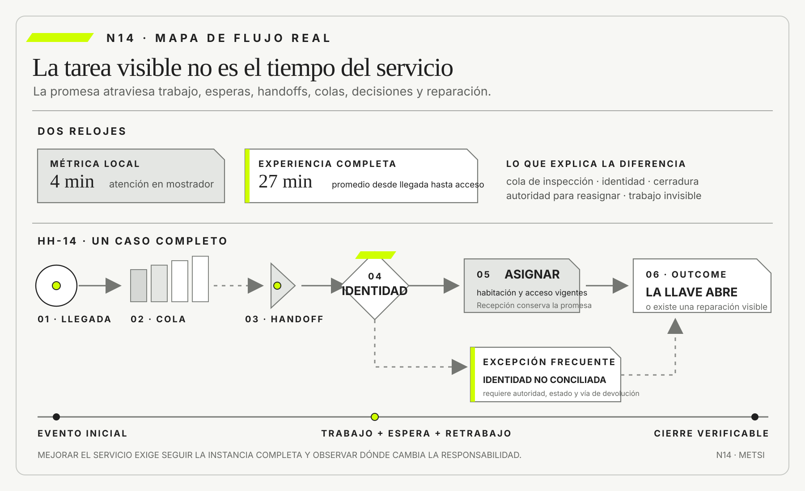

August-Wilhelm Scheer
ARIS, Business Process FrameworksSpringer · 1998
Vinculó procesos, información y arquitectura organizacional en una práctica integrada de diseño.

La promesa, no el área ni la aplicación, define la frontera de un proceso de punta a punta.
Procesos end-to-end, handoffs, colas y excepciones
Ruta de lectura: problema, distinciones, decisiones, prueba, transferencia y preparación.

Nota. SIN NUM. identifica aparatos de orientación y referencia.
Seis referentes y las obras principales utilizadas para construir N14.
Vinculó procesos, información y arquitectura organizacional en una práctica integrada de diseño.

Integró procesos, información, tecnología y cambio organizacional.

Desarrolló una gestión de procesos sensible al contexto, la capacidad institucional y el propósito de la intervención.

Desarrolló la minería de procesos para contrastar modelos con ejecución observada.

Desarrolló fundamentos de teoría de colas para analizar carga, espera, servicio y congestión.

Mostró que la estrategia realizada emerge también de patrones de acción y no sólo de planes declarados.
N14 no resume estas fuentes ni las convierte en receta. Las pone en tensión para construir juicio profesional.
¿Cómo reconstruir un servicio de principio a fin cuando el trabajo atraviesa áreas, sistemas, esperas y excepciones que ningún actor observa por completo?

Un proceso coordina trabajo, decisiones, esperas y reparaciones para producir un resultado observable.
Julián termina la carrera y solicita un certificado analítico para presentar en un empleo. El portal informa un plazo de cuarenta y ocho horas. Completa el formulario, adjunta su documento y recibe el número 8417. Dos días después, el estado sigue en “recibido”.
Escribe a Alumnos. Una persona confirma que el pedido ingresó, pero explica que antes debe verificarse identidad, plan de estudios, actas y ausencia de deuda. La validación académica depende de un archivo que se exporta los martes. Tesorería responde en otra aplicación. Si aparece una materia cursada bajo un plan anterior, el expediente pasa a Equivalencias. Cuando todo está completo, una autoridad firma y otra oficina publica el documento.
Cada sector muestra buenos indicadores. El portal recibe solicitudes en segundos. Alumnos revisa dentro de un día desde que toma el caso. Tesorería responde en promedio durante la jornada. Firma procesa lotes dos veces por semana. Ninguna métrica captura los nueve días que el expediente espera antes de entrar a un lote, los seis que permanece sin responsable por una diferencia de apellido ni los mensajes de Julián preguntando qué falta.
El día doce, el portal solicita nuevamente el documento de identidad. Julián lo adjunta. El día diecinueve descubre que una tilde distinta entre dos registros impide la coincidencia automática. Una persona corrige el vínculo, pero la exportación académica ya ocurrió y el caso espera otra semana. El día treinta y uno, Tesorería vuelve a verificar una deuda que ya había declarado inexistente porque el flujo reinicia controles al cambiar un dato.
En el día cuarenta y tres llega el certificado. La organización puede afirmar que cada tarea tomó menos de cuarenta y ocho horas desde su asignación. Julián puede afirmar que el servicio demoró cuarenta y tres días. Las dos descripciones utilizan relojes y fronteras diferentes.
La primera reunión propone “integrar los sistemas”. La segunda, “automatizar todo con inteligencia artificial”. La tercera, “capacitar a quienes cargan los datos”. Las tres soluciones comienzan antes de reconstruir el proceso real. No se sabe cuántos caminos existen, dónde se acumula trabajo, qué excepciones son frecuentes ni qué decisión protege el plazo prometido.
El equipo elige una unidad: desde que una persona solicita un certificado completo hasta que puede descargar un documento válido. Sigue doce casos, no sólo el de Julián. Registra tareas, esperas, devoluciones, cambios de responsable, consultas y excepciones. Descubre que el tiempo de trabajo directo suma menos de dos horas. El resto es cola, calendario de lotes, aclaraciones y reinicios.
También descubre que la excepción de identidad no es excepcional. Aproximadamente una quinta parte de los casos observados presenta variantes por tildes, doble apellido, cambio de documento o migración histórica. El proceso oficial muestra un camino lineal; el trabajo real contiene bucles y decisiones que personas experimentadas resuelven mediante mensajes privados.
La intervención no consiste en dibujar más rápido. Se redefine la promesa, se elimina una verificación repetida, se adelanta la detección de identidad, se crea una cola visible con edad y responsable, y se separan casos ordinarios de los que requieren equivalencias. El lote semanal se reemplaza por una activación más frecuente sólo donde el volumen y el riesgo lo justifican.
El caso revela la diferencia entre tarea y proceso. Una tarea puede ser eficiente mientras el servicio completo fracasa. Un handoff puede durar segundos técnicamente y dejar un expediente sin autoridad durante días. Una excepción puede parecer marginal en el procedimiento y constituir el trabajo cotidiano.
Esta lectura estudia procesos end-to-end, handoffs, colas y excepciones como objetos de decisión. El propósito no es producir un diagrama exhaustivo. Es explicar cómo una promesa se convierte en trabajo, dónde se interrumpe y qué cambio puede mejorarla sin desplazar el costo hacia otra persona.
HH-13 protegió la asignación de una habitación ante demoras, duplicados y conflictos. Sin embargo, el huésped no compra una transición aislada. Reserva, informa una hora de llegada, paga, se traslada, espera, presenta identidad, recibe acceso, entra a la habitación y quizá solicita reparación.

En un sábado de alta ocupación, Recepción mide cuatro minutos por check-in atendido. El promedio parece bueno. A las 14:00 llegan dieciocho personas. Seis habitaciones todavía esperan inspección, dos cerraduras requieren intervención y tres reservas de agencia no conciliaron identidad. La fila visible crece, pero otras colas permanecen ocultas en Housekeeping, Mantenimiento y el integrador.
Lucía atiende cada caso que puede. Cuando falta una habitación, envía un mensaje a Mariela. Mariela consulta a supervisión. Si hay una cerradura, Federico abre un ticket. Los casos salen de la fila física y entran en conversaciones sin posición ni plazo. Una persona recién llegada parece “atendida” en la métrica aunque todavía no pueda alojarse.
HH-14 reconstruirá el servicio desde la promesa “poder ingresar a una habitación adecuada bajo las condiciones acordadas”. Seguirá casos completos, incluidos traspasos, tiempos de espera, retrabajo y excepción. El objeto ya no es una transición, sino el flujo real que conecta muchas.
Un proceso end-to-end es una secuencia coordinada de trabajo, decisiones, esperas y reparaciones que transforma una necesidad en un outcome observable para una persona o actor. Su frontera se define por la promesa y no por un área, una aplicación ni una ceremonia.
Los handoffs trasladan información, trabajo y responsabilidad. Las colas convierten capacidad, variabilidad y prioridad en tiempo de espera. Las excepciones revelan condiciones que el camino ordinario no representa. Ignorar cualquiera de las tres dimensiones produce procesos localmente eficientes y globalmente incapaces de cumplir.
Modelar un proceso no equivale a describir cómo debería funcionar. Exige contrastar procedimiento, evidencia de ejecución y experiencia. La mejora no se evalúa por cantidad de pasos eliminados, sino por tiempo total, calidad, riesgo, equidad, carga y capacidad de reparación.
Un proceso de punta a punta se define por la promesa y debe seguir instancias completas para hacer visibles trabajo, espera, handoffs, colas, excepciones y reparación.

N13 mostró cómo una transición cruza fronteras bajo demora y falla parcial. HH-13 dejó identidad, invariantes, estado ambiguo y reconciliación. N14 conecta muchas de esas transiciones y observa lo que ocurre entre ellas.
El avance no repite consistencia ni idempotencia. Tampoco selecciona todavía entre múltiples familias de modelos, que será el problema de N15. Utiliza un mapa de proceso porque la pregunta requiere secuencia, responsabilidades, esperas y excepciones. La notación permanece subordinada a la decisión.
El producto será HH-14, mapa de flujo real y excepciones. Recibe episodios y transiciones de HH-13, sigue casos de principio a fin y deja visibles outcome, demanda, tareas, decisiones, handoffs, colas, tiempos, retrabajo, excepciones, autoridad y evidencia.
Una organización suele llamar proceso a lo que un sector controla. “Proceso de Recepción” puede comenzar cuando una persona llega al mostrador y terminar cuando se entrega una llave. Para el huésped, el servicio comenzó con la reserva y no terminó si la llave no abre.
Michael Hammer cuestionó mejoras funcionales que aceleran tareas sin transformar el resultado de principio a fin. Thomas Davenport vinculó innovación de procesos con información y tecnología, pero advirtió que el cambio requiere comprender trabajo y organización. Ambas tradiciones desplazan la atención desde departamentos hacia outcomes.
Una lista de tareas tampoco alcanza. Puede ordenar “validar, aprobar, emitir” sin mostrar quién espera, qué información falta ni qué ocurre ante rechazo. Un proceso incluye decisiones, estados, recursos y reglas. N14 agrega experiencia y autoridad: el recorrido se define desde una promesa y conserva quién puede reparar.
La evidencia que prueba la frontera es el episodio completo. Si el indicador termina antes que la persona reciba valor, la frontera es demasiado estrecha. Si incluye consecuencias que la intervención no puede distinguir, puede ser demasiado amplia. Se ajusta para sostener una decisión concreta.
El diagrama representa una clase de recorridos; cada solicitud real es una instancia. Confundir ambos produce dos errores. Se trata el camino dibujado como si todos los casos lo siguieran o se concluye que no existe proceso porque cada caso difiere.
Una variante agrupa instancias que comparten una secuencia o condición relevante. Certificados ordinarios, cambios de plan e identidad no conciliada pueden requerir rutas distintas. La variante debe descubrirse por evidencia y no por preferencia visual.
La población importa. Seguir sólo casos exitosos invisibiliza abandonos. Seguir únicamente incidentes exagera la excepción. HH-11 aporta muestreo, procedencia y suficiencia. N14 utiliza esas reglas para elegir casos y no para volver a enseñar medición.
La unidad puede ser persona, reserva, solicitud o paquete de trabajo. Cambiarla cambia el proceso observado. Un huésped puede tener dos habitaciones y tres tickets. El mapa debe declarar qué identidad sigue y cómo vincula otras.
La variante tampoco se define sólo por secuencia. Dos casos pueden recorrer los mismos pasos y diferir en autoridad, riesgo o experiencia. Una solicitud accesible que exige prioridad conserva una condición distinta aunque el diagrama visual parezca idéntico. El criterio es separar aquello que cambia una decisión.
El evento inicial debe expresar una demanda reconocible. “Formulario recibido” comienza desde el sistema; “persona solicita un certificado con datos suficientes” comienza desde la necesidad. Ninguna fórmula es siempre correcta. La elección depende de lo que se pretende mejorar.
El outcome describe una diferencia observable, no la ejecución de una tarea. “Documento emitido” puede ser insuficiente si no es válido o accesible. “Huésped alojado en una habitación adecuada” conecta varias áreas y permite examinar el servicio.
La condición de cierre evita que el proceso se extienda indefinidamente. Puede incluir entrega, aceptación y ventana inicial de reparación. Debe distinguir cierre administrativo de resultado. Un expediente archivado no prueba que la persona resolvió su necesidad.
La evidencia de cierre combina evento, estado y experiencia. En Hotel Horizonte, llave emitida, acceso registrado y ausencia de reparación inmediata fortalecen la conclusión. Ninguna pieza aislada garantiza satisfacción, pero el conjunto sostiene una decisión operacional.
Una condición demasiado exigente puede impedir medir. Esperar satisfacción permanente haría infinito el proceso. Una condición demasiado estrecha premia producción interna. Se elige un cierre verificable y una ventana de consecuencias, y se documenta qué resultado posterior queda fuera.
El camino declarado aparece en procedimientos, roles y sistemas. El ejecutado se reconstruye con eventos, documentos, observación y relatos. El experimentado muestra qué espera, repite o interpreta la persona afectada.
Los tres pueden diferir sin que uno sea completamente falso. El procedimiento expresa norma. Los registros capturan sólo lo instrumentado. El relato conserva experiencia y puede omitir mecanismos. Contrastar evita elegir una fuente única por comodidad.
Wil van der Aalst desarrolló la minería de procesos para descubrir, verificar y mejorar recorridos a partir de registros de eventos. El enfoque permite comparar modelo y ejecución, pero depende de identidad, marcas temporales y actividad significativas. Un registro pobre produce un mapa preciso de datos pobres.
La observación de N08 sigue siendo necesaria. Mensajes, llamadas y decisiones fuera del sistema pueden explicar los mayores tiempos. El modelo debe declarar ausencias y no dibujar continuidad donde no existe evidencia.
La divergencia entre caminos es un hallazgo, no una molestia que debe limpiarse. Si el procedimiento exige un control que nunca ocurre, puede ser un incumplimiento o una regla obsoleta. Si el registro muestra una aprobación automática y las personas describen revisión, quizá el evento esté mal nombrado. Cada explicación conduce a una intervención diferente.
El tiempo total de una instancia se compone de trabajo directo, espera, transporte, retrabajo y calendario. Medir sólo la duración activa produce la paradoja del certificado: dos horas de trabajo dentro de cuarenta y tres días.
La espera puede ocurrir antes de una cola visible. Un caso aguarda que alguien lo descubra en una bandeja, que llegue un día de lote o que una autoridad esté disponible. El calendario institucional convierte minutos de tarea en días de servicio.
Hopp y Spearman muestran que flujo, inventario de trabajo y tiempo están relacionados. La Ley de Little vincula, bajo condiciones estables, cantidad promedio en el sistema, tasa de salida y tiempo promedio. No identifica por sí sola una causa, pero permite detectar incoherencias entre capacidad prometida y acumulación.
El promedio no alcanza. La variabilidad importa para quien cae en la cola larga. Se necesitan distribución, percentiles y edad de casos abiertos. Una mejora que reduce promedio y aumenta extremos puede perjudicar a los casos complejos.
El equipo selecciona doce llegadas: ordinarias, tempranas, de agencia, con accesibilidad, con cerradura y con sobreventa. Registra desde confirmación previa hasta ingreso efectivo y primera reparación.
Descubre que el check-in de cuatro minutos mide sólo interacción en mostrador. El tiempo end-to-end desde llegada promedia veintisiete minutos y algunos casos superan una hora. El trabajo directo de Recepción no es el cuello principal. La cola de inspección y la falta de autoridad para reasignar explican la mayor parte de la demora.
También aparecen rutas invisibles. Lucía envía mensajes personales para conocer prioridad. Mariela cambia el orden de limpieza sin registro. Federico resuelve cerraduras antes de crear ticket. Estas acciones sostienen el servicio y vuelven el proceso dependiente de memoria y relaciones.
HH-14 no las condena automáticamente. Las incorpora como evidencia, pregunta qué capacidad representan y decide cuáles formalizar, habilitar o eliminar.
El mapa agrega para cada tramo el tiempo disponible para la persona y el tiempo administrado por el hotel. Esperar veinte minutos con información y alternativa no equivale a esperar diez sin saber. La experiencia no reemplaza la medición temporal, pero cambia qué reparación resulta necesaria.
Un handoff ocurre cuando una instancia cambia de responsable, medio o contexto. No es sólo enviar datos. Incluye qué se espera del receptor, qué evidencia acompaña el caso y cuándo queda aceptada la responsabilidad.

Un correo puede transmitir información sin transferir responsabilidad efectiva. Una tarea puede asignarse y permanecer invisible. Si nadie confirma recepción, existe una zona donde ambos actores creen que el otro responde.
Rummler y Brache llamaron la atención sobre los espacios en blanco entre funciones, donde los procesos suelen perder desempeño. N14 los trata como objetos explícitos: condición de salida, condición de entrada, paquete de información, autoridad, plazo y devolución.
La calidad se prueba con preguntas. ¿El receptor puede actuar sin buscar información adicional? ¿Puede rechazar justificadamente? ¿Quien entrega sabe que la responsabilidad cambió? ¿La persona afectada puede conocer el estado? Un handoff débil crea cola y retrabajo aunque el mensaje llegue.
También se prueba el retorno. Si el receptor detecta información insuficiente, debe devolver el caso con motivo y sin perder lo ya validado. Un rebote que reinicia todo convierte control en castigo. El paquete de handoff necesita versión, decisión pendiente y vía de aclaración.
No todos los handoffs trasladan lo mismo. Una transferencia de información entrega datos para que otra actividad continúe. Una transferencia de custodia cambia quién debe conservar y localizar el caso. Una transferencia de decisión entrega a otro rol una pregunta sobre la que posee autoridad. Una transferencia de ejecución asigna trabajo sin desplazar necesariamente la responsabilidad por la promesa. Confundirlas produce vacíos: alguien recibe un archivo y supone que también recibió autoridad, o ejecuta una tarea mientras otra área continúa respondiendo por el resultado sin poder observarla.
El contrato de recepción vuelve comprobable el cambio. Declara identidad del caso, estado conocido, decisión pendiente, evidencia adjunta, condición para aceptar, plazo y conducta ante rechazo. La aceptación no necesita una ceremonia pesada. Puede ser un evento del sistema, una toma explícita de la cola o una regla de asignación cuya ejecución quede visible. Lo indispensable es que emisor y receptor puedan reconstruir desde cuándo cambió la responsabilidad y qué parte no cambió.
Hotel Horizonte aplica el contrato cuando una habitación inspeccionada pasa de Housekeeping a Recepción. Mariela Benítez afirma que la preparación terminó y adjunta hora, unidad y excepción observada. Lucía Ferreyra acepta el caso para asignación sólo si puede comprobar vigencia de cerradura y requerimientos de la reserva. Si falta una señal técnica, no devuelve toda la habitación a limpieza. Abre una dependencia dirigida a Federico Müller, conserva lo ya validado y comunica que la promesa todavía no puede cerrarse. El flujo evita convertir una ausencia técnica en retrabajo de otra área.
Las ramas paralelas requieren una condición de reunión. Inspección, asignación administrativa y acceso pueden avanzar en tiempos diferentes. El mapa debe indicar qué resultados pueden acumularse y cuál es la condición que permite continuar. Esperar a que cada área envíe un mensaje informal crea una cola invisible. Avanzar con la primera respuesta transforma parcialidad en certeza. Una reunión explícita registra piezas recibidas, faltantes, vigencia y autoridad para degradar o detener.
La prueba adversa interrumpe una rama y cambia otra después de la aceptación. Si Housekeeping corrige la condición de una habitación, el contrato identifica qué decisiones posteriores quedan invalidadas. No toda modificación obliga a reiniciar el episodio. Una corrección de observación puede exigir nueva verificación y conservar identidad, datos de reserva y prioridad. La regla de invalidación selectiva impide que control y retrabajo se vuelvan equivalentes.
También se observa la experiencia externa. Para el huésped, tres transferencias internas no deberían convertirse en tres pedidos de la misma información ni en respuestas incompatibles. El contrato identifica qué dato ya fue reunido, quién comunica y cómo se corrige una promesa anterior. La continuidad del caso se comprueba tanto en los registros como en la capacidad de una persona para conocer estado, plazo y siguiente acción.
El análisis agrega una medida de calidad del handoff. No cuenta mensajes enviados, sino recepciones accionables, devoluciones con causa, búsquedas adicionales, tiempo hasta aceptación y casos sin responsable visible. Una transferencia rápida que llega incompleta puede empeorar el servicio. La evidencia permite decidir si conviene mejorar el paquete, cambiar la frontera o eliminar el handoff mediante una capacidad compartida.
Una cola es trabajo que espera capacidad o condición. Puede ser física, digital, mental o informal. Toda cola posee entrada, disciplina de prioridad, responsable, capacidad y señal de envejecimiento, aunque la organización no las haya definido.
“Primero en entrar, primero en salir” es una política. Priorizar urgencia, valor, riesgo o fecha es otra. Cuando no se declara, la prioridad puede depender de quién insiste, conoce a alguien o domina el lenguaje institucional. La cola se vuelve mecanismo de desigualdad.
La utilización cercana al máximo aumenta espera ante variabilidad. Buscar que cada persona esté ocupada todo el tiempo puede empeorar el flujo. Capacidad de reserva, límites de trabajo en curso y segmentación de variantes permiten absorber picos.
La evidencia incluye tasa de llegada, salida, edad, bloqueos y reingresos. Una cola corta puede ocultar abandono. Una cola larga puede ser deliberada si agrupa trabajo para una decisión experta, pero necesita promesa y criterio.
El cuello de botella limita el flujo bajo una configuración. No siempre es el sector con más trabajo visible. Puede ser una autoridad disponible dos horas, un lote semanal, una regla o información que llega tarde.
Mejorar una tarea que no limita el sistema produce inventario más rápido. Automatizar la recepción de certificados puede llenar antes la cola de validación. El indicador local mejora mientras el tiempo total empeora.
La restricción puede moverse después de una intervención. Por eso se mide el sistema nuevamente. También puede variar por segmento: equivalencias limita casos históricos; firma, los ordinarios. Un único promedio esconde ambos.
La decisión profesional es proteger el flujo de la promesa, no maximizar cada recurso. A veces conviene que una capacidad espere para evitar que las personas esperen.
Una restricción puede ser política. Firmar en lote quizá no responda a capacidad, sino a una tradición. Antes de comprar tecnología, se pregunta qué riesgo protege el lote y si ese control puede ejecutarse con otra frecuencia. La evidencia distingue necesidad de costumbre.
Retrabajo repite actividad porque la salida anterior no resultó suficiente. Puede deberse a error, información incompleta, cambio legítimo o regla contradictoria. No todo bucle es desperdicio: revisar una decisión de alto riesgo puede ser necesario.
John Seddon denomina demanda de falla al contacto generado porque el sistema no hizo o no comunicó bien lo necesario. Las consultas de Julián sobre estado consumen capacidad y expresan opacidad. Medirlas como demanda nueva oculta que el proceso las produjo.
El bucle debe registrar causa y decisión. “Devuelto” sin motivo impide aprender. Si las mismas faltas reaparecen, conviene mover validación al origen, mejorar información o cambiar regla. Si cada caso requiere juicio distinto, automatizar puede endurecer una excepción.
La evidencia útil separa repetición protectora de repetición evitable. La primera agrega control proporcional; la segunda consume tiempo sin mejorar la promesa.
El retrabajo también puede cruzar fronteras. Un dato corregido en Alumnos obliga a Tesorería a revisar nuevamente aunque su decisión no dependía de ese campo. La regla de invalidación debe ser selectiva. Repetir todos los controles por cualquier cambio parece seguro y crea demora sin evidencia adicional.
Una excepción aparece cuando una instancia no puede continuar bajo reglas ordinarias. Puede ser rara y crítica, o frecuente y mal nombrada. Si una quinta parte de certificados presenta identidad no conciliada, esa frecuencia constituye evidencia fuerte de que podría existir una variante estable; la clasificación se confirma sólo si comparte condiciones, recorrido y cierre distinguibles.
El proceso debe declarar detección, clasificación, autoridad, información, plazo y retorno. “Resolver manualmente” no es diseño. Traslada carga a personas que quizá no tienen herramientas ni legitimidad.
Las excepciones revelan supuestos. Un formulario que admite un apellido y un documento estable presupone trayectorias administrativas homogéneas. Los casos que no encajan no son ruido: prueban el límite del modelo.
Una buena ruta de excepción conserva la promesa y adapta el camino. No reduce controles sin criterio. También evita que la persona repita desde cero lo ya validado.
La salida de excepción debe poder regresar al flujo ordinario o cerrar con otra promesa. Sin punto de retorno, el caso queda en una bandeja permanente. Sin señal de edad, sólo avanza quien reclama. La ruta necesita un acuerdo operacional tan explícito como el camino principal.
La excepción no es una etiqueta final. Es un estado gobernado que comienza cuando una condición ordinaria deja de ser suficiente y termina cuando el caso reingresa, obtiene un cierre alternativo o se transforma en una obligación distinta. Entre ambos puntos necesita identidad, edad, evidencia y autoridad. Una bandeja llamada “casos especiales” reúne situaciones heterogéneas y hace imposible saber si alguna perdió vigencia o quedó sin reparación.
El primer paso es clasificar por causa y consecuencia, no por el área que recibe. Puede faltar información, existir una contradicción entre fuentes, requerirse una autorización, fallar una capacidad o aparecer una trayectoria que el modelo no contempló. Dos casos enviados a la misma persona pueden necesitar políticas diferentes. Una falta documental admite completar; una identidad disputada exige preservar versiones; una obligación de accesibilidad puede impedir continuar por el camino ordinario aun cuando todos los campos estén completos.
El segundo paso define un reloj pertinente. La edad administrativa desde que se abrió el caso no siempre coincide con el tiempo restante para cumplir la promesa. En Hotel Horizonte, una discrepancia detectada tres días antes del arribo posee otra urgencia que la misma discrepancia descubierta con el huésped presente. El mapa conserva ambos tiempos: cuánto lleva abierta y cuánto falta hasta que la ausencia de resolución produzca daño. Así la prioridad deja de depender sólo de antigüedad o insistencia.
El tercer paso asigna una salida. Reingresar requiere una condición verificable y no la frase “resuelto manualmente”. Si Federico confirma vigencia de la cerradura, la habitación puede volver al punto de reunión sin repetir inspección. Si no puede repararse a tiempo, Camila y Lucía deben ofrecer una alternativa bajo autoridad definida. El cierre alternativo conserva qué promesa cambió, quién aceptó la decisión y qué efecto permanece pendiente. Una compensación no convierte el caso en ordinario ni borra la causa.
La revisión periódica busca patrones sin convertir frecuencia en único criterio. Casos numerosos pueden responder a causas diferentes; un caso raro puede revelar una variante legítima con alta consecuencia. Para promover una excepción a variante se exige población o condición reconocible, recorrido relativamente estable, autoridad, métricas y forma de cierre. Para tratarla como incidente se requiere una desviación que el diseño no pretende admitir. Para conservarla como excepción deliberada se explica por qué el juicio situado sigue siendo necesario.
También existe el camino inverso. Una variante puede volver a excepción si cambia la norma, disminuye la capacidad o aparece una población que el recorrido estándar no protege. El mapa registra versión y vigencia para no presentar una clasificación histórica como propiedad natural. Esta revisión permite aprender sin congelar las categorías del proceso.
La prueba integral selecciona una excepción de cada tipo y otra que permanece abierta al cambio de turno. Una persona ajena al episodio debe poder identificar motivo, evidencia reunida, reloj, responsable, próxima decisión y ruta de retorno. Luego se retira temporalmente al rol experto habitual. Si el caso sólo avanza mediante memoria personal, el flujo carece de capacidad institucional aunque el diagrama muestre una ruta.
La métrica combina entradas, cierres, reingresos, edad, reaperturas y consecuencias. Una tasa alta de cierre puede ocultar derivaciones injustificadas o reparaciones incompletas. Por eso se inspeccionan episodios y se pregunta qué parte de la promesa se sostuvo. El propósito no es eliminar excepciones, sino impedir que el camino ordinario expulse trabajo, riesgo o personas hacia un espacio sin reglas.
El trabajo en sombra incluye planillas paralelas, mensajes, recordatorios y acuerdos usados para sostener el proceso. Puede compensar una herramienta inadecuada, preservar cuidado o crear riesgos.
Eliminarlo sin entenderlo puede romper el servicio. Formalizarlo todo puede destruir flexibilidad. N08 enseñó a observarlo; N14 pregunta qué función cumple en el flujo. Si una planilla ordena prioridad porque el sistema no muestra edad, la necesidad debe incorporarse. Si comparte datos sensibles sin control, requiere alternativa segura.
La memoria se concentra en personas que saben a quién llamar. Cuando faltan, la excepción se detiene. El mapa debe identificar esa dependencia y construir capacidad distribuida, documentación o autoridad de respaldo.
La evidencia del trabajo en sombra se trata con cuidado. No se publica una conversación personal ni se castiga a quien compensó una falla. Se registra función, frecuencia, riesgo y dependencia. La pregunta es qué necesidad del sistema satisface y cómo conservarla de forma sostenible.
Nombrar una persona responsable del proceso puede mejorar coordinación y también crear una ficción. Nadie controla por completo a clientes, proveedores, normas, clima y sistemas externos. La responsabilidad end-to-end no significa mando absoluto, sino capacidad de observar el recorrido, convocar a quienes deciden y conducir reparación.
El rol necesita acceso a evidencia y autoridad de escalamiento. Si sólo recibe métricas al cierre del mes, no puede intervenir sobre una cola envejecida. Si puede ordenar a todas las áreas sin conocer restricciones, puede desplazar riesgo. La gobernanza combina responsabilidad de conjunto con conocimiento local.
También debe evitar que cada caso dependa de una persona heroica. Las decisiones ordinarias se distribuyen mediante reglas y capacidades; las excepciones se escalan con contexto. El responsable del proceso cuida la promesa, no ejecuta cada tarea.
En Hotel Horizonte, el rol de coordinación del pico no reemplaza a Mariela, Lucía o Federico. Mantiene visión del outcome, identifica casos bloqueados y reúne autoridad cuando una excepción cruza áreas. La evidencia que justifica conservarlo es la reducción de edad y retrabajo, no la cantidad de mensajes que envía.
Una alternativa es un equipo estable alrededor de la capacidad en lugar de un coordinador. La elección depende de frecuencia, autonomía y complejidad. El criterio permanece: ninguna instancia debería perderse entre responsabilidades sin que el sistema pueda detectarlo y repararlo.
Automatizar una tarea no mejora necesariamente el flujo. Un clasificador puede derivar certificados a Equivalencias con rapidez y aumentar falsos desvíos. Un agente puede perseguir respuestas entre sistemas y repetir solicitudes. La evaluación debe observar tiempo total, errores, retrabajo y daño.
La inteligencia artificial puede ayudar a resumir expedientes, detectar variantes, proponer prioridad o reunir evidencia. No debe ocultar criterio ni autoridad. Una recomendación necesita señales, incertidumbre y posibilidad de revisión.
La minería de procesos asistida por inteligencia artificial puede sugerir patrones, pero una correlación frecuente no explica causa. Los datos contienen la estructura del sistema instrumentado, no todo el trabajo. Relatos y observación siguen siendo necesarios.
El diseño debe decidir dónde automatizar, dónde asistir y dónde conservar juicio. La decisión se prueba sobre excepciones, no sólo sobre casos ordinarios donde cualquier herramienta parece competente.
Un agente que coordina puede reducir búsquedas y también crear un nuevo handoff opaco. Debe dejar visible qué pidió, qué recibió, qué infirió y cuándo escaló. Si la persona operadora no puede corregir su clasificación ni comprender la prioridad, la automatización concentra autoridad sin asumir responsabilidad.
Hotel Horizonte crea una única identidad de caso desde llegada hasta acceso. Los mensajes a Housekeeping y Mantenimiento se convierten en handoffs con aceptación, plazo y evidencia. Cada cola muestra cantidad, edad, condición de bloqueo y responsable.
El equipo no centraliza todo en Recepción. Mariela conserva autoridad operativa; Federico, técnica. Se crea un rol de coordinación durante el pico para resolver prioridades cruzadas y comunicar estado. Las excepciones de accesibilidad no compiten en una fila indiferenciada.
Después de dos semanas, el tiempo de mostrador cambia poco, pero disminuye la espera total y las consultas repetidas. El resultado confirma que el problema no estaba en acelerar a Lucía, sino en coordinar el flujo.
La intervención produce un efecto rival: algunas tareas llegan antes a Mantenimiento y elevan su trabajo en curso. El equipo limita la liberación, agrega capacidad durante el pico y conserva la medición. Hacer visible la cola no la resuelve por sí solo, pero impide optimizar ignorándola.
HH-14 organiza el proceso mediante doce campos:
El mapa no exige colocar todo en una página. Puede combinar recorrido principal, variantes y tabla de evidencia. Su unidad es la decisión, no la estética del diagrama.
Cada campo recibe fuente, fecha y responsable de revisión. Una flecha sin evidencia se marca como hipótesis. Una excepción sin autoridad queda como riesgo abierto. El artefacto diferencia lo observado, lo normativo y lo propuesto.
La reconstrucción utiliza procedimientos, eventos, observación, entrevistas, documentos y métricas. Cada fuente responde algo distinto. La minería de procesos aporta frecuencia y secuencia instrumentada. La observación revela trabajo no registrado. Las entrevistas explican criterios y excepciones. La experiencia muestra la promesa percibida.
Se elige una muestra con casos ordinarios, largos, abandonados y reparados. Se preserva procedencia. Las discrepancias no se promedian: se convierten en preguntas. Si el procedimiento dice una aprobación y los eventos no la muestran, puede faltar instrumentación o control.
El Process Mining Handbook de 2022 integra descubrimiento, conformidad y mejora, y muestra una disciplina madura que excede la visualización automática. N14 toma esa potencia sin suponer que el registro es el proceso.
La reconstrucción concluye cuando permite explicar decisiones y variación suficiente para intervenir, no cuando registra cada clic.
La conformidad entre modelo y registro puede revelar pasos omitidos o rutas nuevas, pero no decide si el modelo o la ejecución tienen razón. Un desvío puede ser incumplimiento, innovación local o respuesta justa a un caso no previsto. La interpretación vuelve a requerir actores y propósito.
BPMN 2.0.2 ofrece eventos, actividades, compuertas, mensajes, pools y lanes para representar coordinación. Resulta útil cuando la semántica de esas piezas mejora la conversación o la implementación.
El modelo de Hotel Horizonte comienza con un evento que representa la llegada anticipada de una persona con reserva confirmada. El pool del hotel se divide en lanes para Recepción, Housekeeping, Mantenimiento y Comercial. La agencia externa y el servicio de cerraduras ocupan pools separados porque no obedecen a la misma autoridad. Esta decisión gráfica no es decorativa: impide dibujar como tarea interna aquello que en realidad depende de un tercero y necesita un intercambio verificable.
Recepción consulta la reserva, identifica la condición prometida y solicita una habitación. Housekeeping verifica limpieza e inspección. Mantenimiento informa capacidad de acceso. Una compuerta paralela permite que esas verificaciones avancen sin fingir un orden inexistente; otra compuerta reúne únicamente las condiciones necesarias para decidir. Si falta accesibilidad, la rama no vuelve al comienzo ni borra lo ya comprobado. Abre una excepción con responsable, plazo y evidencia conservada.
La compuerta exclusiva posterior distingue tres resultados: asignar, ofrecer una alternativa autorizada o declarar que todavía no existe una decisión segura. El tercer resultado evita que la falta de respuesta se transforme en rechazo. Cada rama termina con una condición observable. En la primera, la persona accede a una habitación adecuada. En la segunda, acepta una reparación y la organización conserva el cambio de promesa. En la tercera, el caso queda pendiente con una próxima acción, una autoridad y un tiempo de revisión.
Los mensajes muestran qué cruza fronteras, no todo lo que sucede. La confirmación de la agencia trae condiciones comerciales; el proveedor de cerraduras devuelve un resultado técnico; el hotel decide si ambos alcanzan para sostener su promesa. Un mensaje recibido no transfiere automáticamente responsabilidad. El contrato de recepción debe indicar qué caso se acepta, qué decisión queda pendiente y qué evidencia acompaña el cambio.
Las excepciones frecuentes se modelan como variantes del proceso y no como notas al margen. La llegada anticipada, la habitación accesible, la cerradura sin conexión y la sobreventa alteran reglas diferentes. En cambio, un incidente raro puede representarse mediante un evento de borde que interrumpe una actividad y abre reparación. La elección depende de frecuencia, consecuencia y necesidad de análisis. Si toda diferencia se dibuja como excepción, el camino principal miente. Si toda diferencia se incorpora al camino principal, el diagrama deja de permitir una decisión.
La compensación tampoco significa deshacer mecánicamente. Una habitación ya ofrecida, un cobro comunicado o una persona que esperó no regresan al estado anterior. BPMN permite representar actividades de compensación, pero N14 exige nombrar la reparación material: reasignar, restituir un importe, comunicar el cambio y conservar la explicación. La organización debe poder mostrar qué consecuencia corrige y cuál permanece.
Flores y Winograd ayudan a leer el proceso como una red de compromisos. Una solicitud abre una expectativa; una promesa establece condiciones de satisfacción; una declaración de cumplimiento puede ser aceptada o cuestionada. En el mapa, esos actos no se confunden con el envío de datos. Mariela puede declarar terminada la limpieza, pero Lucía acepta la responsabilidad por la entrega sólo cuando las demás condiciones están presentes. La diferencia explica por qué una secuencia técnicamente completa todavía puede dejar una promesa sin dueño.
El equipo prueba el diagrama con tres episodios reales. Recorre qué sabía cada actor, qué mensaje recibió, qué decisión tomó y qué reparación quedó disponible. Las divergencias entre el dibujo y la evidencia se conservan como hallazgos. El modelo se considera útil cuando permite localizar una espera, una autoridad ausente o una excepción expulsada, y cuando una segunda persona puede reconstruir la misma decisión sin depender de memoria privada.
Una lane no debe convertirse en organigrama decorativo. Un mensaje no prueba que exista un handoff responsable. Una compuerta dibujada no declara quién decide. El modelo necesita anotaciones de evidencia, autoridad y tiempo cuando cambian la intervención.
Demasiado detalle produce un mural imposible de revisar. Muy poco oculta excepciones. Se comienza con ocho a quince pasos de valor y decisión, se abren sólo zonas problemáticas y se conserva vínculo entre niveles.
APQC ofrece en 2026 la versión 8.0 de su Process Classification Framework como taxonomía para comparar y nombrar procesos. Sirve como referencia, no como descripción del flujo particular. Clasificar no reemplaza reconstruir.
Dumas, La Rosa, Mendling y Reijers presentan gestión de procesos como un ciclo que identifica, descubre, analiza, rediseña, implementa y monitorea. Ese ciclo evita tratar el diagrama como entrega final. ISO 9001:2015 promueve un enfoque por procesos dentro de un sistema de gestión de calidad. Ninguna referencia define por sí sola la frontera correcta para Hotel Horizonte: ofrecen disciplina que debe situarse.
August-Wilhelm Scheer conecta procesos, información y arquitectura organizacional; Jan vom Brocke insiste en que la gestión de procesos adquiere sentido cuando se adapta al contexto y a la capacidad institucional. Leonard Kleinrock aporta una lectura rigurosa de espera y congestión. Henry Mintzberg recuerda que el patrón real de acción puede diferir de la estrategia declarada. En N14, estas miradas impiden reducir el flujo a una flecha ideal: obligan a contrastar diseño, comportamiento, carga y aprendizaje.
Las métricas deben corresponder a la promesa. Tiempo total, porcentaje de casos completos sin retrabajo, edad de abiertos, tasa de abandono, excepciones, reparaciones y distribución por segmento forman un conjunto inicial.
La eficiencia local puede conservarse como diagnóstico, no como éxito suficiente. Si Housekeeping limpia más habitaciones y aumenta la espera de inspección, el sistema no mejoró. Si automatizar reduce costo y aumenta rechazos injustos, el outcome se deteriora.
La Ley de Little puede comprobar coherencia entre trabajo en curso, salida y tiempo. No reemplaza estudiar variabilidad ni causa. Los percentiles evitan que un promedio oculte la cola larga.
La medición incluye equidad. Se comparan tiempos y rechazos por variantes pertinentes sin recolectar datos innecesarios. La diferencia abre investigación; no autoriza atribuir causa automáticamente.
También se mide estabilidad. Un proceso puede cumplir promedio durante semanas tranquilas y colapsar ante un pico previsible. La capacidad se evalúa con variabilidad, no sólo con tasa habitual. El resultado incluye posibilidad de recuperación después de acumular trabajo.
Una intervención declara mecanismo. “Implementar un bot” es una solución; “reducir espera causada por información faltante al inicio” es una hipótesis. Puede probarse con validación anticipada, mensaje claro o asistencia humana.
Se elige una zona, un período y medidas de sistema. También se vigilan efectos rivales: desplazar cola, aumentar falsos rechazos, sobrecargar otro rol o perjudicar excepciones. La reversibilidad permite aprender con menor costo.
El experimento conserva casos comparables y relato de quienes trabajan. Una baja de tiempo puede provenir de menor demanda. N06 aporta disciplina para reducir incertidumbre; N14 la aplica al flujo.
La mejora se incorpora sólo si sostiene outcome y no rompe reparación. Luego se vuelve a recorrer el proceso porque la restricción puede haberse movido.
La prueba debe durar lo suficiente para incluir variantes y ciclos de calendario. Evaluar un cambio de certificados durante dos días no alcanza si las firmas ocurren semanalmente. A la vez, un piloto acotado evita comprometer toda la población antes de conocer efectos.
El hotel considera pedir check-in digital obligatorio. Podría reducir mostrador y trasladar problemas de identidad al huésped antes de viajar. HH-14 compara una alternativa distinta: validación opcional previa, detección anticipada de excepciones y cola visible al arribo.
Los casos ordinarios completan información antes. Los casos con accesibilidad conservan contacto humano y prioridad explícita. Las habitaciones pendientes no aparecen como check-in completado. Recepción ve un tablero de outcomes, no sólo tareas.
La prueba mide tiempo desde llegada hasta acceso, retrabajo, abandono, errores de identidad y reparaciones. También observa carga de Housekeeping y Mantenimiento. Si la fila física baja pero aumenta la espera invisible, la intervención no pasa.
El resultado esperado no es flujo sin excepciones. Es un proceso que las detecta temprano, las asigna a autoridad y mantiene informada a la persona.
El equipo conserva una comparación con el período anterior y registra ocupación, clima y mezcla de canales. Si la demanda cambia, no atribuye toda mejora al diseño. Las observaciones de huéspedes y personal explican qué parte de la experiencia no entra en el indicador.
El alta no comienza cuando se imprime un documento ni termina cuando una persona abandona la cama. Incluye decisión clínica, medicación, instrucciones, coordinación de cuidados, transporte y capacidad de continuar tratamiento.
Cada área puede cumplir su tarea y la persona esperar horas o volver por falta de información. Una receta pendiente crea cola. Una autorización de cobertura funciona como handoff externo. Una duda de quien cuida puede no figurar en el sistema.
El mapa sigue una instancia desde decisión clínica hasta condiciones seguras de continuidad. Distingue variantes y no prescribe medicina. La transferencia prueba el método: promesa, frontera, evidencia, colas, autoridad y reparación.
Una mejora que acelera liberación de cama y aumenta reingresos fracasa end-to-end. La métrica local no sustituye el outcome.
El handoff final necesita confirmación de comprensión, no sólo entrega de un papel. La persona puede requerir idioma accesible, participación de quien cuida o coordinación con atención primaria. Estas variantes prueban que la frontera profesional incluye capacidad de continuar, no únicamente salida física.
Las áreas no muestran por sí solas la secuencia ni la promesa. El proceso cruza responsabilidades.
Las excepciones reaparecen como mensajes, demoras y trabajo en sombra.
La mayor parte del recorrido puede estar en cola, calendario o retrabajo.
La herramienta acelera una regla posiblemente equivocada y desplaza el cuello.
Transmitir datos no garantiza aceptación de responsabilidad ni capacidad de actuar.
La utilización local máxima puede aumentar trabajo en curso y espera total.
El camino ordinario permanece ficticio y la operación depende de héroes.
Los registros muestran lo instrumentado y omiten negociación, cuidado y abandono.
Archivar un caso no prueba que la necesidad haya sido resuelta.


Un proceso end-to-end puede atravesar organizaciones que no comparten autoridad ni datos.
Producto debe definir promesa y outcome. Análisis reconstruye variantes y reglas. Operaciones observa colas y excepciones. Desarrollo instrumenta identidad y eventos. Diseño hace visible espera y estado. Dirección asigna capacidad y autoridad. Ninguna disciplina puede optimizar el proceso sola.
El profesional puede distinguir tiempo de tarea y de servicio, handoff y mensaje, excepción y variante, camino declarado y ejecutado. Puede localizar una restricción sin culpar al área más visible y proponer un experimento que vigila desplazamientos.
La documentación se vuelve una memoria viva. HH-14 no certifica cumplimiento permanente. Registra evidencia, decisiones y fecha para poder reabrir el proceso cuando cambien demanda, reglas o tecnología.
La mejora profesional también cambia la conversación sobre desempeño. En lugar de preguntar qué sector demoró, se pregunta qué condición mantuvo detenida la instancia y qué diseño la hizo invisible. La diferencia no elimina responsabilidad: la ubica en reglas, capacidad, información y autoridad que pueden modificarse.
El equipo puede así distinguir una falla ocasional de una estructura recurrente. Un caso aislado invita a reparar. Un patrón de handoffs incompletos, colas envejecidas o variantes expulsadas exige rediseñar. Esa separación evita responder con proyectos grandes a cualquier incidente y normalizar problemas sistémicos como excepciones individuales.
Un proceso end-to-end puede atravesar organizaciones que no comparten autoridad ni datos. El mapa debe representar contratos y dependencias sin fingir control. La promesa propia incluye cómo se gestiona esa incertidumbre.
Reducir variabilidad puede mejorar flujo y destruir adaptación. No toda excepción debe estandarizarse. Se distingue variación evitable de juicio necesario.
Observar personas para medir tiempos puede convertirse en vigilancia. Se debe minimizar identificación, explicar propósito y evitar usar evidencia de aprendizaje como sanción individual sin contexto.
La taxonomía de APQC, BPMN o una plataforma de minería pueden ayudar y también imponer categorías. La organización conserva responsabilidad por el significado. Una herramienta no define outcome ni legitimidad.
Finalmente, el proceso puede cambiar durante el estudio. La reconstrucción debe fecharse y admitir incertidumbre. La meta no es congelar trabajo, sino sostener una intervención revisable.

HH-14 produce recorrido, variantes, colas, responsabilidades y evidencia. Sin embargo, un mapa de proceso no responde todas las preguntas. Arquitectura, datos, estados, actores o decisiones pueden requerir otras representaciones.
N15 seleccionará modelos según pregunta, audiencia y costo. No repetirá el análisis end-to-end. Utilizará HH-14 para mostrar que cada modelo recorta y que la elección debe justificarse por la decisión que habilita.
Un proceso end-to-end conecta una demanda con un outcome observable. Su frontera nace de la promesa, no del organigrama. Cada instancia sigue un recorrido; las variantes explican diferencias relevantes.
Los handoffs trasladan trabajo, información y responsabilidad. Las colas convierten capacidad, variabilidad y prioridad en espera. Los cuellos limitan flujo; el retrabajo y la demanda de falla muestran costos creados por el propio sistema. Las excepciones revelan supuestos y requieren autoridad.
Procedimiento, eventos, observación y experiencia deben triangularse. BPMN, minería de procesos y taxonomías ayudan cuando sirven a una pregunta. Las métricas de sistema prevalecen sobre éxitos locales.
HH-14 organiza doce campos y un experimento de flujo. El resultado no es el proceso perfecto, sino una representación suficiente para mejorar una promesa sin desplazar silenciosamente costo, riesgo o exclusión.

Camino declarado: recorrido prescripto por normas, procedimientos o diseño.
Camino ejecutado: secuencia reconstruida desde evidencia de casos reales.
Cola: trabajo que espera capacidad, información, condición o autoridad.
Cuello de botella: restricción que limita el flujo bajo una configuración.
Demanda de falla: contacto generado porque el sistema no hizo o comunicó bien lo necesario.
Excepción: instancia que no puede continuar mediante las reglas ordinarias.
Handoff: transferencia de trabajo, información y responsabilidad entre actores o contextos.
Instancia: caso individual que atraviesa un proceso.
Minería de procesos: técnicas para descubrir, verificar y mejorar procesos mediante registros de eventos.
Outcome: diferencia observable que expresa el resultado relevante de la promesa.
Proceso end-to-end: recorrido desde demanda reconocida hasta outcome y cierre definidos.
Retrabajo: repetición causada por salida insuficiente, error, cambio o control deliberado.
Tiempo de ciclo: duración total de una instancia dentro de la frontera elegida.
Trabajo en curso: cantidad de instancias que ingresaron y todavía no cerraron.
Variante: conjunto de instancias con secuencia o condición distintiva relevante.
Para el encuentro, seleccionar un servicio conocido. Definir promesa, evento inicial, outcome y cierre. Seguir una instancia ordinaria y otra excepcional. Separar trabajo, espera, handoffs, colas, retrabajo y reparación. Formular una hipótesis de intervención y un efecto rival.